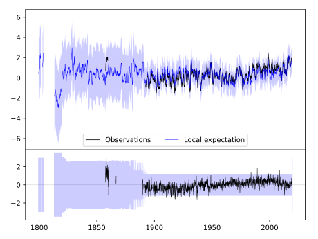
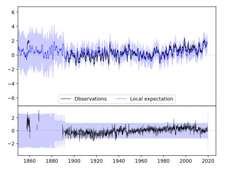

LAKE CITY 2 E [USA]



| Neighbour | Name | Country | Distance | Lon/Lat | Years |
|---|
| 720061 | LAKE CITY 2 E | USA | 0 | -82.6, 30.2 | 1857-2019 |
| 720062 | MADISON | USA | 83 | -83.4, 30.5 | 1889-2019 |
| 720056 | FEDERAL POINT | USA | 114 | -81.5, 29.8 | 1890-2019 |
| 720074 | QUITMAN 2 NW | USA | 116 | -83.6, 30.8 | 1882-2019 |
| 720057 | FERNANDINA BEACH | USA | 119 | -81.5, 30.7 | 1890-2019 |
| 720077 | WAYCROSS 4 NE | USA | 125 | -82.3, 31.3 | 1882-2019 |
| 720059 | INVERNESS 3 SE | USA | 158 | -82.3, 28.8 | 1890-2019 |
| 720064 | ALBANY 3 SE | USA | 203 | -84.1, 31.5 | 1878-2019 |
| 720063 | SAINT LEO | USA | 213 | -82.3, 28.3 | 1890-2019 |
| 720068 | EASTMAN 1 W | USA | 229 | -83.2, 32.2 | 1882-2019 |
| 720072 | MILLEN 4 N | USA | 305 | -82.0, 32.9 | 1882-2019 |
| 720071 | MILLEDGEVILLE | USA | 327 | -83.2, 33.1 | 1878-2019 |
| 720054 | ARCADIA | USA | 340 | -81.9, 27.2 | 1892-2019 |
| 720465 | BLACKVILLE 3 W | USA | 376 | -81.3, 33.4 | 1884-2019 |
| 720463 | AIKEN 5SE | USA | 376 | -81.7, 33.5 | 1893-2019 |
| 720475 | SUMMERVILLE 4W | USA | 385 | -80.2, 33.0 | 1893-2019 |
| 720467 | CHARLESTON CITY | USA | 386 | -79.9, 32.8 | 1823-2019 |
| 720078 | WEST POINT | USA | 388 | -85.2, 32.9 | 1882-2019 |
| 720003 | HIGHLAND HOME | USA | 399 | -86.3, 31.9 | 1891-2019 |
| 720073 | NEWNAN 5N | USA | 421 | -84.8, 33.5 | 1882-2019 |